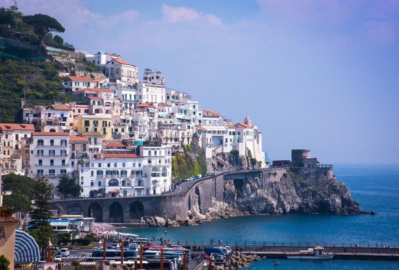

想在退休后来一次难忘的旅行吗？以下是旅游网站The Travel挑选出最适合年长旅行者的5个国家，不论是探索历史遗迹、品尝在地美食，或仅是享受自然美景，都是慢游世界的完美选择。
1. 意大利
意大利拥有悠久历史、精致美食与迷人风景，可漫步托斯卡尼的葡萄酒庄，赞叹罗马的建筑奇迹，在美丽的阿玛菲（Amalfi）海岸舒缓身心，还可在当地餐厅品尝举世闻名的意大利美食。罗马竞技场、庞贝古城让人遥想意大利辉煌的过往；风景如画的佛罗伦斯、威尼斯让艺术爱好者亲睹米开朗基罗、达文西等名家杰作。
此外，可参加各种体验活动，如佛罗伦斯的品酒课程、巴勒莫（Palermo）和五渔村（La Spezia）的烹饪课程，以及众多从罗马出发的游轮小旅行。
2. 希腊
希腊是历史迷的天堂，这里的古代遗址与神话故事让人仿佛穿越时空。圣托里尼（Santorini）岛和米克诺斯（Mykonos）岛优美宁静，居民的热情更令人难忘。
雅典的地标建筑雅典卫城（Acropolis）是旅游热门景点，此外可走访同样古老的德尔菲（Delphi），或在克里特岛纯净的海滩上放空。希腊具备各种无障碍设施与服务，专业旅行社了解熟龄旅客的喜好，确保旅程顺畅无阻。
3. 澳洲
热爱户外活动的银发族，澳洲是首选。雪梨、墨尔本等城市拥有充满活力的艺术氛围、美丽的公园与优质的医疗服务；大堡礁提供浮潜、划船等活动；蜿蜒的大洋路（Great Ocean Road），可欣赏到令人叹为观止的海岸风光。
蓝山与卡卡杜（Kakadu）国家公园适合健行与观赏野生动物，还可在葡萄酒产区巴罗莎山谷（Barossa Valley）与玛格丽特河（Margaret River）享受品酒之旅。
4. 西班牙
传统的塔帕斯与西班牙海鲜饭是许多人的最爱，还能同时享受当地市场与节庆的热闹气氛。特内里费（Tenerife）岛和伊比萨（Ibiza）岛是宁静的度假胜地，有无数适合年长旅客的住宿设施。伊比萨岛的圣欧拉利亚（Santa Eulalia）的沙滩与海湾，少了喧闹观光客，多了一份清静。
5. 新西兰
新西兰风景优美、犯罪率低，是安全的度假地点。可自驾欣赏乡村风光、参观电影「魔戒」拍摄现场哈比村（Hobbiton movie set），或在马尔堡（Marlborough）享受品酒之旅；菲尔德兰（Fiordland）、东格里罗（Tongariro）等国家公园可健行、接触野生动物。
喜爱泡汤者还可在罗托路亚（Rotorua）温泉放松身心，或搭船饱览米尔福德峡湾（Milford Sound）景观。新西兰对年长者提供各种购物优惠，此外公共交通、购物中心、商店与住宿都有便利的无障碍设施。